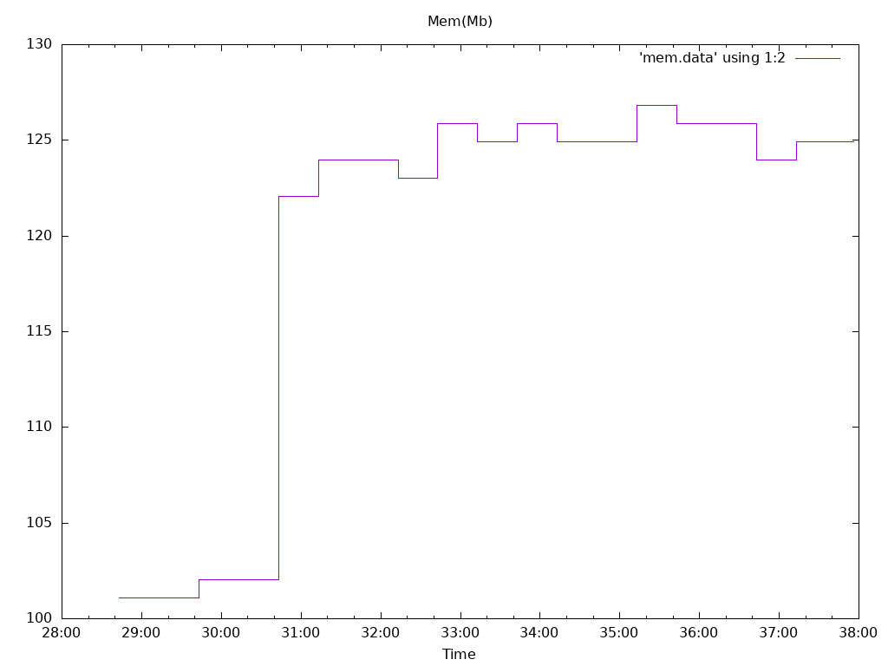

Options


Image: quay.io/openshift-logging/fluentd:1.7.4
Total Log Stressors: 1
Lines Per Second: 1500
Run Duration: 10m
Payload Source: synthetic
Latency of logs collected based on the time the log was generated and ingested
| Total | Size | Elapsed | Mean | Min | Max | Median |
|---|---|---|---|---|---|---|
| Msg | (s) | (s) | (s) | (s) | (s) | |
| 165513 | 1024 | 10m0s | 47.013 | 41.343 | 54.026 | 45.815 |
